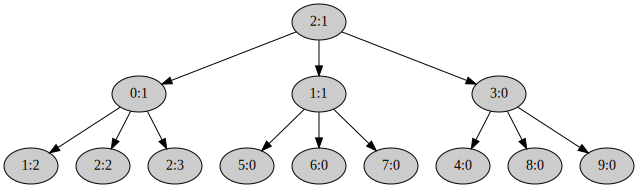

Eager fork()
Системный вызов
fork()
долгое время считался удачной абстракцией.
Но время показало, что у него есть и большое количество недостатков,
см. статью
A fork() in the road.
Хотя не стоит воспринимать
fork()
как удачный интерфейс порождения процессов,
его реализация является хорошим упражнением.
Nikka воплощает некоторые идеи экзоядра,
поэтому реализовывать
fork()
будем в пространстве пользователя.
Естественно, от ядра потребуется небольшая помощь.
Тем более то, что реализует ядро, пригодится и для других целей.
Например, можно будет реализовать аналог современного системного вызова для порождения процессов —
posix_spawn().
Естественно, также в пространстве пользователя.
Подробнее про концепцию экзоядра можно почитать в оригинальной статье — Exokernel: an operating system architecture for application-level resource management.
Системный вызов kernel::process::syscall::exofork()
Реализуйте системный вызов
#![allow(unused)] fn main() { fn exofork( process: MutexGuard<Process>, context: MiniContext, ) -> Result<SyscallResult> }
в файле kernel/src/process/syscall.rs.
Он создаёт копию вызывающего процесса process и возвращает его Pid.
При этом новый процесс создаётся практически без адресного пространства и не готовый к работе.
Поэтому он, в частности, не ставится в очередь планировщика.
Этот системный вызов использует создание копии системной части адресного пространства процесса process,
которое
вы реализовали ранее.
А вот пользовательскую часть адресного пространства он не копирует.
Этим займётся код на стороне пользователя.
Системный вызов exofork() возвращает Pid::Id с идентификатором потомка в процессе родителя и константу Pid::Current в процессе потомка.
Текущий контекст родителя — context — нужно записать в потомка.
Вы уже делали аналогично для
sched_yield().
В родителя
exofork()
вернётся через функцию
kernel::process::syscall::sysret(),
которая получает context на вход и восстанавливает его.
А вот потомок будет позже запущен планировщиком через цепочку
kernel::process::process::Process::enter_user_mode() ->
kernel::process::registers::Registers::switch_to() ->
iretq.
И для
iretq
нужно предоставить правильный контекст пользователя, в который нужно будет переключиться.
Обратите внимание на код библиотечной обёртки
lib::syscall::exofork()
для этого системного вызова
в файле user/lib/src/syscall.rs.
Она предполагает, что ваша реализация функции
lib::syscall::syscall()
возвращает два поля в кортеже — child_pid и process_info:
#![allow(unused)] fn main() { let (child_pid, process_info) = syscall(Syscall::EXOFORK.bits(), 0, 0, 0, 0, 0)?; }
В поле child_pid должен быть Pid::Id с идентификатором потомка в процессе родителя или
Pid::Current в процессе потомка.
А в process_info — ссылка на системную информацию о текущем процессе
ku::info::ProcessInfo.
Это поле имеет смысл только для потомка.
Соглашение такое: ядро при запуске нового процесса и через метод
kernel::process::Process::new()
и через метод
kernel::process::Process::duplicate()
передаёт в одном из регистров ссылку на
ku::info::ProcessInfo.
Метод
kernel::process::Process::new()
использует регистр rdi.
А метод
kernel::process::Process::duplicate() —
rsi, предполагая что ошибка из системного вызова передаётся через rax, а pid — через rdi.
Вы можете поменять эти соглашения.
Но в любом случае проверьте, что в
lib::syscall::exofork()
приходит правильные и pid и ссылка на
ku::info::ProcessInfo.
Системный вызов kernel::process::syscall::set_state()
Реализуйте системный вызов
#![allow(unused)] fn main() { fn set_state( process: MutexGuard<Process>, dst_pid: usize, state: usize, ) -> Result<SyscallResult> }
в файле kernel/src/process/syscall.rs.
Он переводит целевой процесс, заданный идентификатором dst_pid, в заданное состояние state.
И ставит его в очередь планировщика в случае State::Runnable.
Не забудьте проверить права доступа процесса process к процессу dst_pid.
Рекурсивное отображение памяти
Для того чтобы в пространстве пользователя процесс мог прочитать собственное отображение страниц адресного пространства, удобно использовать старый джедайский трюк — рекурсивное отображение памяти.
Реализуйте метод
#![allow(unused)] fn main() { fn Mapping::make_recursive_mapping(&mut self) -> Result<usize> }
в файле kernel/src/memory/mapping.rs.
Выберете в таблице страниц корневого уровня свободную запись, например ближе к концу.
И используйте её как рекурсивную.
Сохраните её номер в поле
Mapping::recursive_mapping
и верните наружу.
Поправьте методы
Mapping::duplicate_page_table() и
Mapping::drop_page_table(),
чтобы они игнорировали эту запись корневой таблицы страниц.
Библиотечные функции
В файле user/lib/src/memory/mod.rs реализуйте вспомогательные функции кода пользователя.
lib::memory::temp_page()
#![allow(unused)] fn main() { fn temp_page() -> Result<Page> }
Заводит в адресном пространстве процесса страницу памяти для временных нужд.
Использует системный вызов
lib::syscall::map(),
определённый в файле
user/lib/src/syscall.rs,
реализацию которого в ядре вы уже написали.
lib::memory::copy_page()
#![allow(unused)] fn main() { unsafe fn copy_page(src: Page, dst: Page) }
Копирует содержимое страницы src в страницу dst с помощью
core::ptr::copy_nonoverlapping().
lib::memory::page_table()
#![allow(unused)] fn main() { fn page_table(address: Virt, level: u32) -> &'static PageTable }
Пользуясь рекурсивной записью таблицы страниц,
выдаёт ссылку на таблицу страниц заданного уровня level для заданного виртуального адреса address.
Узнать номер рекурсивной записи в пространстве пользователя можно методом
ProcessInfo::recursive_mapping(),
а получить саму структуру
ku::info::ProcessInfo
можно функцией
ku::info::process_info().
Основной код пользовательского процесса eager_fork
В файле user/eager_fork/src/main.rs пользовательского процесса eager_fork реализуйте следующие функции.
copy_page_table()
#![allow(unused)] fn main() { fn copy_page_table( child: Pid, level: u32, virt_addr: Virt, ) -> Result<()> }
Копирует таблицу страниц уровня level для виртуального адреса virt_addr из своего адресного пространства в пространство дочернего процесса child.
Работает рекурсивно.
Корень рекурсии запускает функция
#![allow(unused)] fn main() { fn copy_address_space(child: Pid) -> Result<()> { copy_page_table(child, PAGE_DIRECTORY_LEVEL, Virt::default()) } }
Проходится по таблице страниц, получая ссылку на неё с помощью
реализованной вами ранее
lib::memory::page_table().
На записях PageTableEntry, которые доступны для пользовательского кода, либо рекурсивно спускается на следующий уровень таблицы страниц, либо на листьевом уровне копирует содержимое отображённой страницы.
Адрес отображаемой страницы вычисляет поэтапно на рекурсивных вызовах с помощью аргумента virt_addr,
номера обрабатываемой записи PageTableEntry и уровня таблицы страниц.
Для копирования страницы в целевой процесс, сначала выделяет временную страницу в собственном адресном пространстве с помощью функции lib::memory::temp_page().
Копирует текущую отображаемую страницу туда с помощью
реализованной вами ранее
функции lib::memory::copy_page().
Затем, с помощью системных вызовов
lib::syscall::copy_mapping()
и
lib::syscall::unmap()
передаёт скопированную временную страницу потомку child, отображая её в его адресном пространстве
по адресу исходной страницы в своём адресном пространстве.
Запись номер ku::process_info().recursive_mapping() корневой таблицы страниц, а также страницы,
предоставляющие пользовательскому процессу информацию о нём, системе и RingBuffer для логирования,
нужно проигнорировать.
То есть, страницы для которых ku::process_info().contains_address() возвращает true.
Их отобразит в память потомка ядро, выбирая новые, а не разделяемые, физические фреймы.
eager_fork()
#![allow(unused)] fn main() { fn eager_fork() -> Result<bool> }
Создаёт процесс потомка с помощью
реализованного вами ранее
системного вызова syscall::exofork().
Далее копирует своё адресное пространство в пространство потомка с помощью функции fn copy_address_space().
И запускает потомка системным вызовом syscall::set_state(), устанавливая его состояние в State::Runnable.
В потомке ничего не делает.
Возвращает true в процессе потомка и false в процессе родителя.
Проверьте себя
Теперь должны заработать тесты exofork_syscall() и eager_fork() в файле
kernel/tests/5-um-3-eager-fork.rs:
$ (cd kernel; cargo test --test 5-um-3-eager-fork)
...
5_um_3_eager_fork::exofork_syscall--------------------------
15:26:59 0 I page allocator init; free_page_count = 33822867456; block = [0v18000000000, 0v7F8000000000), size 126.000 TiB
15:26:59 0 I duplicate; address_space = "process" @ 0p7E0A000
15:26:59 0 I switch to; address_space = "process" @ 0p7E0A000
15:26:59 0 D extend mapping; block = [0v10000000, 0v10007644), size 29.566 KiB; page_block = [0v10000000, 0v10008000), size 32.000 KiB; flags = R; page_flags = PRESENT | WRITABLE | USER_ACCESSIBLE
15:26:59 0 D elf loadable program header; file_block = [0v2016D9, 0v208D1D), size 29.566 KiB; memory_block = [0v10000000, 0v10007644), size 29.566 KiB; flags = R
15:26:59 0 D extend mapping; block = [0v10008000, 0v100547CD), size 305.950 KiB; page_block = [0v10008000, 0v10055000), size 308.000 KiB; flags = X R; page_flags = PRESENT | WRITABLE | USER_ACCESSIBLE
15:26:59 0 D elf loadable program header; file_block = [0v208D29, 0v255EA6), size 308.372 KiB; memory_block = [0v10007650, 0v100547CD), size 308.372 KiB; flags = X R
15:26:59 0 D elf loadable program header; file_block = [0v255EA9, 0v255F99), size 240 B; memory_block = [0v100547D0, 0v100548C0), size 240 B; flags = WR
15:26:59 0 D extend mapping; block = [0v10055000, 0v1005AAE0), size 22.719 KiB; page_block = [0v10055000, 0v1005B000), size 24.000 KiB; flags = WR; page_flags = PRESENT | WRITABLE | USER_ACCESSIBLE
15:26:59 0 D elf loadable program header; file_block = [0v255F99, 0v25C191), size 24.492 KiB; memory_block = [0v100548C0, 0v1005AAE0), size 24.531 KiB; flags = WR
15:26:59 0 I switch to; address_space = "base" @ 0p1000
15:26:59 0 I loaded ELF file; context = { rip: 0v10007BC0, rsp: 0v7F7FFFFFF000 }; file_size = 5.474 MiB; process = { pid: <current>, address_space: "process" @ 0p7E0A000, { rip: 0v10007BC0, rsp: 0v7F7FFFFFF000 } }
15:26:59 0 I allocate; slot = Process { pid: 0:0, address_space: "0:0" @ 0p7E0A000, { rip: 0v10007BC0, rsp: 0v7F7FFFFFF000 } }; process_count = 1
15:26:59 0 I user process page table entry; entry_point = 0v10007BC0; frame = Frame(32234 @ 0p7DEA000); flags = PRESENT | WRITABLE | USER_ACCESSIBLE | ACCESSED | DIRTY
15:26:59 0 D process_frames = 152
15:26:59 0 I page allocator init; free_page_count = 33822867456; block = [0v18000000000, 0v7F8000000000), size 126.000 TiB
15:26:59 0 I duplicate; address_space = "process" @ 0p7D72000
15:26:59 0 I switch to; address_space = "process" @ 0p7D72000
15:26:59 0 D extend mapping; block = [0v10000000, 0v10007644), size 29.566 KiB; page_block = [0v10000000, 0v10008000), size 32.000 KiB; flags = R; page_flags = PRESENT | WRITABLE | USER_ACCESSIBLE
15:26:59 0 D elf loadable program header; file_block = [0v2016D9, 0v208D1D), size 29.566 KiB; memory_block = [0v10000000, 0v10007644), size 29.566 KiB; flags = R
15:26:59 0 D extend mapping; block = [0v10008000, 0v100547CD), size 305.950 KiB; page_block = [0v10008000, 0v10055000), size 308.000 KiB; flags = X R; page_flags = PRESENT | WRITABLE | USER_ACCESSIBLE
15:26:59 0 D elf loadable program header; file_block = [0v208D29, 0v255EA6), size 308.372 KiB; memory_block = [0v10007650, 0v100547CD), size 308.372 KiB; flags = X R
15:26:59 0 D elf loadable program header; file_block = [0v255EA9, 0v255F99), size 240 B; memory_block = [0v100547D0, 0v100548C0), size 240 B; flags = WR
15:26:59 0 D extend mapping; block = [0v10055000, 0v1005AAE0), size 22.719 KiB; page_block = [0v10055000, 0v1005B000), size 24.000 KiB; flags = WR; page_flags = PRESENT | WRITABLE | USER_ACCESSIBLE
15:26:59 0 D elf loadable program header; file_block = [0v255F99, 0v25C191), size 24.492 KiB; memory_block = [0v100548C0, 0v1005AAE0), size 24.531 KiB; flags = WR
15:27:00.013 0 I switch to; address_space = "base" @ 0p1000
15:27:00.017 0 I loaded ELF file; context = { rip: 0v10007BC0, rsp: 0v7F7FFFFFF000 }; file_size = 5.474 MiB; process = { pid: <current>, address_space: "process" @ 0p7D72000, { rip: 0v10007BC0, rsp: 0v7F7FFFFFF000 } }
15:27:00.031 0 I allocate; slot = Process { pid: 1:0, address_space: "1:0" @ 0p7D72000, { rip: 0v10007BC0, rsp: 0v7F7FFFFFF000 } }; process_count = 2
15:27:00.041 0 I user process page table entry; entry_point = 0v10007BC0; frame = Frame(32082 @ 0p7D52000); flags = PRESENT | WRITABLE | USER_ACCESSIBLE | ACCESSED | DIRTY
15:27:00.055 0 D process_frames = 152
15:27:00.059 0 I switch to; address_space = "0:0" @ 0p7E0A000
15:27:00.153 0 I page allocator init; free_page_count = 33688649728; block = [0v18000000000, 0v7F0000000000), size 125.500 TiB
15:27:00.161 0 I duplicate; address_space = "process" @ 0p7CDA000
15:27:00.167 0 I switch to; address_space = "process" @ 0p7CDA000
15:27:00.173 0 I switch to; address_space = "0:0" @ 0p7E0A000
15:27:00.179 0 I allocate; slot = Process { pid: 2:0, address_space: "2:0" @ 0p7CDA000, { rip: 0v0, rsp: 0v0 } }; process_count = 3
15:27:00.189 0 I syscall = "exofork"; process = 0:0; child = 2:0
15:27:00.195 0 D child_pid = 2:0
15:27:00.199 0 D child = { pid: 2:0, address_space: "2:0" @ 0p7CDA000, { rip: 0v0, rsp: 0v0 } }
15:27:00.211 0 I free; slot = Process { pid: 0:0, address_space: "0:0" @ 0p7E0A000, { rip: 0v10007BC0, rsp: 0v7F7FFFFFF000 } }; process_count = 2
15:27:00.219 0 I switch to; address_space = "base" @ 0p1000
15:27:00.225 0 I drop the current address space; address_space = "0:0" @ 0p7E0A000; switch_to = "base" @ 0p1000
15:27:00.293 0 I free; slot = Process { pid: 1:0, address_space: "1:0" @ 0p7D72000, { rip: 0v10007BC0, rsp: 0v7F7FFFFFF000 } }; process_count = 1
15:27:00.303 0 I drop; address_space = "1:0" @ 0p7D72000
15:27:00.367 0 I dequeue; pid = Some(2:0)
15:27:00.373 0 I switch to; address_space = "2:0" @ 0p7CDA000
15:27:00.379 0 D entering the user mode; pid = 2:0; registers = { rax: 0x0, rdi: 0xFFFFFFFFFFFFFFFE, rsi: 0x7EFFFFFFB000, { mode: user, cs:rip: 0x0023:0v0, ss:rsp: 0x001B:0v0, rflags: IF } }
15:27:00.395 0 D trap = "Page Fault"; context = { mode: user, cs:rip: 0x0023:0v0, ss:rsp: 0x001B:0v0, rflags: IF }; info = { address: 0v0, code: 0b10100 = non-present page | execute | user }
15:27:00.425 0 I user mode trap; trap = "Page Fault"; number = 14; info = { address: 0v0, code: 0b10100 = non-present page | execute | user }; context = { mode: user, cs:rip: 0x0023:0v0, ss:rsp: 0x001B:0v0, rflags: IF }; pid = 2:0
15:27:00.441 0 I free; slot = Process { pid: 2:0, address_space: "2:0" @ 0p7CDA000, { rip: 0v0, rsp: 0v0 } }; process_count = 0
15:27:00.451 0 I switch to; address_space = "base" @ 0p1000
15:27:00.457 0 I drop the current address space; address_space = "2:0" @ 0p7CDA000; switch_to = "base" @ 0p1000
15:27:00.529 0 D leaving the user mode; pid = 2:0
15:27:00.535 0 I dequeue; pid = None
5_um_3_eager_fork::exofork_syscall----------------- [passed]
5_um_3_eager_fork::eager_fork-------------------------------
15:27:00.635 0 I page allocator init; free_page_count = 33822867456; block = [0v18000000000, 0v7F8000000000), size 126.000 TiB
15:27:00.645 0 I duplicate; address_space = "process" @ 0p7CC4000
15:27:00.649 0 I switch to; address_space = "process" @ 0p7CC4000
15:27:00.657 0 D extend mapping; block = [0v10000000, 0v10007A34), size 30.551 KiB; page_block = [0v10000000, 0v10008000), size 32.000 KiB; flags = R; page_flags = PRESENT | WRITABLE | USER_ACCESSIBLE
15:27:00.671 0 D elf loadable program header; file_block = [0v77B368, 0v782D9C), size 30.551 KiB; memory_block = [0v10000000, 0v10007A34), size 30.551 KiB; flags = R
15:27:00.707 0 D extend mapping; block = [0v10008000, 0v1005D3F2), size 340.986 KiB; page_block = [0v10008000, 0v1005E000), size 344.000 KiB; flags = X R; page_flags = PRESENT | WRITABLE | USER_ACCESSIBLE
15:27:00.721 0 D elf loadable program header; file_block = [0v782DA8, 0v7D875A), size 342.424 KiB; memory_block = [0v10007A40, 0v1005D3F2), size 342.424 KiB; flags = X R
15:27:00.747 0 D elf loadable program header; file_block = [0v7D8760, 0v7D8860), size 256 B; memory_block = [0v1005D3F8, 0v1005D4F8), size 256 B; flags = WR
15:27:00.759 0 D extend mapping; block = [0v1005E000, 0v100640A0), size 24.156 KiB; page_block = [0v1005E000, 0v10065000), size 28.000 KiB; flags = WR; page_flags = PRESENT | WRITABLE | USER_ACCESSIBLE
15:27:00.771 0 D elf loadable program header; file_block = [0v7D8860, 0v7DF3E0), size 26.875 KiB; memory_block = [0v1005D4F8, 0v100640A0), size 26.914 KiB; flags = WR
15:27:00.799 0 I switch to; address_space = "base" @ 0p1000
15:27:00.803 0 I loaded ELF file; context = { rip: 0v1000F750, rsp: 0v7F7FFFFFF000 }; file_size = 5.763 MiB; process = { pid: <current>, address_space: "process" @ 0p7CC4000, { rip: 0v1000F750, rsp: 0v7F7FFFFFF000 } }
15:27:00.817 0 I allocate; slot = Process { pid: 2:1, address_space: "2:1" @ 0p7CC4000, { rip: 0v1000F750, rsp: 0v7F7FFFFFF000 } }; process_count = 1
15:27:00.827 0 I user process page table entry; entry_point = 0v1000F750; frame = Frame(32098 @ 0p7D62000); flags = PRESENT | WRITABLE | USER_ACCESSIBLE | ACCESSED | DIRTY
15:27:00.841 0 D process_frames = 162
15:27:00.845 0 I dequeue; pid = Some(2:1)
15:27:00.849 0 I switch to; address_space = "2:1" @ 0p7CC4000
15:27:00.853 0 D entering the user mode; pid = 2:1; registers = { rax: 0x0, rdi: 0x7F7FFFFDB000, rsi: 0x0, { mode: user, cs:rip: 0x0023:0v1000F750, ss:rsp: 0x001B:0v7F7FFFFFF000, rflags: IF } }
15:27:00.873 0 I name = "eager_fork *"; pedigree = [2:1]; len = 1; capacity = 3; pid = 2:1
15:27:01.021 0 I page allocator init; free_page_count = 33688649728; block = [0v18000000000, 0v7F0000000000), size 125.500 TiB
15:27:01.029 0 I duplicate; address_space = "process" @ 0p7D4C000
15:27:01.035 0 I switch to; address_space = "process" @ 0p7D4C000
15:27:01.041 0 I switch to; address_space = "2:1" @ 0p7CC4000
15:27:01.047 0 I allocate; slot = Process { pid: 1:1, address_space: "1:1" @ 0p7D4C000, { rip: 0v1000B487, rsp: 0v7F7FFFFFDB08 } }; process_count = 2
15:27:01.057 0 I syscall = "exofork"; process = 2:1; child = 1:1
15:27:01.063 0 D leaving the user mode; pid = 2:1
15:27:01.069 0 I the process was preempted; pid = 2:1; user_context = { mode: user, cs:rip: 0x0023:0v1002759D, ss:rsp: 0x001B:0v7F7FFFFFD968, rflags: IF ZF PF }
15:27:01.079 0 I returned
15:27:01.083 0 I dequeue; pid = Some(2:1)
15:27:01.087 0 I switch to; address_space = "2:1" @ 0p7CC4000
15:27:01.093 0 D entering the user mode; pid = 2:1; registers = { rax: 0xFE, rdi: 0x10060B38, rsi: 0x0, { mode: user, cs:rip: 0x0023:0v1002759D, ss:rsp: 0x001B:0v7F7FFFFFD968, rflags: IF ZF PF } }
15:27:01.107 0 I syscall::exofork() done; child = Ok(1:1); pid = 2:1
15:27:01.289 0 I syscall::set_state(); child = 1:1; result = Ok(()); pid = 2:1
15:27:01.387 0 I page allocator init; free_page_count = 33688649728; block = [0v18000000000, 0v7F0000000000), size 125.500 TiB
15:27:01.397 0 I duplicate; address_space = "process" @ 0p7DF2000
15:27:01.401 0 I switch to; address_space = "process" @ 0p7DF2000
15:27:01.407 0 I switch to; address_space = "2:1" @ 0p7CC4000
15:27:01.413 0 I allocate; slot = Process { pid: 0:1, address_space: "0:1" @ 0p7DF2000, { rip: 0v1000B487, rsp: 0v7F7FFFFFDB08 } }; process_count = 3
15:27:01.423 0 I syscall = "exofork"; process = 2:1; child = 0:1
15:27:01.427 0 I syscall::exofork() done; child = Ok(0:1); pid = 2:1
15:27:01.599 0 I syscall::set_state(); child = 0:1; result = Ok(()); pid = 2:1
15:27:01.711 0 I page allocator init; free_page_count = 33688649728; block = [0v18000000000, 0v7F0000000000), size 125.500 TiB
15:27:01.721 0 I duplicate; address_space = "process" @ 0p7C1C000
15:27:01.725 0 I switch to; address_space = "process" @ 0p7C1C000
15:27:01.733 0 I switch to; address_space = "2:1" @ 0p7CC4000
15:27:01.739 0 I allocate; slot = Process { pid: 3:0, address_space: "3:0" @ 0p7C1C000, { rip: 0v1000B487, rsp: 0v7F7FFFFFDB08 } }; process_count = 4
15:27:01.749 0 I syscall = "exofork"; process = 2:1; child = 3:0
15:27:01.753 0 I syscall::exofork() done; child = Ok(3:0); pid = 2:1
15:27:01.925 0 I syscall::set_state(); child = 3:0; result = Ok(()); pid = 2:1
15:27:01.931 0 I free; slot = Process { pid: 2:1, address_space: "2:1" @ 0p7CC4000, { rip: 0v1002759D, rsp: 0v7F7FFFFFD968 } }; process_count = 3
15:27:01.941 0 I switch to; address_space = "base" @ 0p1000
15:27:01.945 0 I drop the current address space; address_space = "2:1" @ 0p7CC4000; switch_to = "base" @ 0p1000
15:27:02.017 0 I syscall = "exit"; pid = 2:1; code = 0; reason = Some(OK)
15:27:02.023 0 D leaving the user mode; pid = 2:1
15:27:02.027 0 I dequeue; pid = Some(1:1)
15:27:02.031 0 I switch to; address_space = "1:1" @ 0p7D4C000
15:27:02.037 0 D entering the user mode; pid = 1:1; registers = { rax: 0x0, rdi: 0xFFFFFFFFFFFFFFFE, rsi: 0x7EFFFFFFB000, { mode: user, cs:rip: 0x0023:0v1000B487, ss:rsp: 0x001B:0v7F7FFFFFDB08, rflags: IF } }
15:27:02.063 0 D leaving the user mode; pid = 1:1
15:27:02.067 0 I the process was preempted; pid = 1:1; user_context = { mode: user, cs:rip: 0x0023:0v1001D938, ss:rsp: 0x001B:0v7F7FFFFFD1A8, rflags: IF SF PF CF }
15:27:02.081 0 I returned
15:27:02.085 0 I dequeue; pid = Some(0:1)
15:27:02.089 0 I switch to; address_space = "0:1" @ 0p7DF2000
15:27:02.093 0 D entering the user mode; pid = 0:1; registers = { rax: 0x0, rdi: 0xFFFFFFFFFFFFFFFE, rsi: 0x7EFFFFFFB000, { mode: user, cs:rip: 0x0023:0v1000B487, ss:rsp: 0x001B:0v7F7FFFFFDB08, rflags: IF ZF PF } }
15:27:02.109 0 I syscall::exofork() done; child = Ok(<current>); pid = 0:1
15:27:02.121 0 I just created; child = <current>; pid = 0:1; pid = 0:1
15:27:02.123 0 I name = "eager_fork *1"; pedigree = [2:1, 0:1]; len = 2; capacity = 3; pid = 0:1
15:27:02.241 0 I page allocator init; free_page_count = 33554432000; block = [0v18000000000, 0v7E8000000000), size 125.000 TiB
15:27:02.251 0 I duplicate; address_space = "process" @ 0p7CC4000
15:27:02.255 0 I switch to; address_space = "process" @ 0p7CC4000
15:27:02.263 0 I switch to; address_space = "0:1" @ 0p7DF2000
15:27:02.267 0 I allocate; slot = Process { pid: 2:2, address_space: "2:2" @ 0p7CC4000, { rip: 0v1000B487, rsp: 0v7F7FFFFFD648 } }; process_count = 4
15:27:02.277 0 I syscall = "exofork"; process = 0:1; child = 2:2
15:27:02.283 0 I syscall::exofork() done; child = Ok(2:2); pid = 0:1
15:27:02.363 0 D leaving the user mode; pid = 0:1
15:27:02.367 0 I the process was preempted; pid = 0:1; user_context = { mode: user, cs:rip: 0x0023:0v1002C383, ss:rsp: 0x001B:0v7F7FFFFFB9E8, rflags: IF ZF PF }
15:27:02.377 0 I returned
15:27:02.381 0 I dequeue; pid = Some(3:0)
15:27:02.387 0 I switch to; address_space = "3:0" @ 0p7C1C000
15:27:02.391 0 D entering the user mode; pid = 3:0; registers = { rax: 0x0, rdi: 0xFFFFFFFFFFFFFFFE, rsi: 0x7EFFFFFFB000, { mode: user, cs:rip: 0x0023:0v1000B487, ss:rsp: 0x001B:0v7F7FFFFFDB08, rflags: IF ZF PF } }
15:27:02.407 0 I syscall::exofork() done; child = Ok(<current>); pid = 3:0
15:27:02.417 0 I just created; child = <current>; pid = 3:0; pid = 3:0
15:27:02.421 0 I name = "eager_fork *2"; pedigree = [2:1, 3:0]; len = 2; capacity = 3; pid = 3:0
15:27:02.549 0 I page allocator init; free_page_count = 33554432000; block = [0v18000000000, 0v7E8000000000), size 125.000 TiB
15:27:02.559 0 I duplicate; address_space = "process" @ 0p7D0C000
15:27:02.563 0 I switch to; address_space = "process" @ 0p7D0C000
15:27:02.571 0 I switch to; address_space = "3:0" @ 0p7C1C000
15:27:02.577 0 I allocate; slot = Process { pid: 4:0, address_space: "4:0" @ 0p7D0C000, { rip: 0v1000B487, rsp: 0v7F7FFFFFD648 } }; process_count = 5
15:27:02.585 0 I syscall = "exofork"; process = 3:0; child = 4:0
15:27:02.591 0 I syscall::exofork() done; child = Ok(4:0); pid = 3:0
15:27:02.663 0 D leaving the user mode; pid = 3:0
15:27:02.669 0 I the process was preempted; pid = 3:0; user_context = { mode: user, cs:rip: 0x0023:0v1002C383, ss:rsp: 0x001B:0v7F7FFFFFB9E8, rflags: IF ZF PF }
15:27:02.679 0 I returned
15:27:02.683 0 I dequeue; pid = Some(1:1)
15:27:02.687 0 I switch to; address_space = "1:1" @ 0p7D4C000
15:27:02.693 0 D entering the user mode; pid = 1:1; registers = { rax: 0xD1, rdi: 0x7F7FFFFFD2A8, rsi: 0x7F7FFFFFD6E0, { mode: user, cs:rip: 0x0023:0v1001D938, ss:rsp: 0x001B:0v7F7FFFFFD1A8, rflags: IF SF PF CF } }
15:27:02.051 0 I syscall::exofork() done; child = Ok(<current>); pid = 1:1
15:27:02.063 0 I just created; child = <current>; pid = 1:1; pid = 1:1
15:27:02.711 0 I name = "eager_fork *0"; pedigree = [2:1, 1:1]; len = 2; capacity = 3; pid = 1:1
15:27:02.841 0 I page allocator init; free_page_count = 33554432000; block = [0v18000000000, 0v7E8000000000), size 125.000 TiB
15:27:02.851 0 I duplicate; address_space = "process" @ 0p7CFD000
15:27:02.855 0 I switch to; address_space = "process" @ 0p7CFD000
15:27:02.861 0 I switch to; address_space = "1:1" @ 0p7D4C000
15:27:02.867 0 I allocate; slot = Process { pid: 5:0, address_space: "5:0" @ 0p7CFD000, { rip: 0v1000B487, rsp: 0v7F7FFFFFD648 } }; process_count = 6
15:27:02.877 0 I syscall = "exofork"; process = 1:1; child = 5:0
15:27:02.883 0 I syscall::exofork() done; child = Ok(5:0); pid = 1:1
15:27:03.061 0 I syscall::set_state(); child = 5:0; result = Ok(()); pid = 1:1
15:27:03.163 0 I page allocator init; free_page_count = 33554432000; block = [0v18000000000, 0v7E8000000000), size 125.000 TiB
15:27:03.171 0 I duplicate; address_space = "process" @ 0p7AE8000
15:27:03.177 0 I switch to; address_space = "process" @ 0p7AE8000
15:27:03.183 0 I switch to; address_space = "1:1" @ 0p7D4C000
15:27:03.189 0 I allocate; slot = Process { pid: 6:0, address_space: "6:0" @ 0p7AE8000, { rip: 0v1000B487, rsp: 0v7F7FFFFFD648 } }; process_count = 7
15:27:03.199 0 I syscall = "exofork"; process = 1:1; child = 6:0
15:27:03.203 0 I syscall::exofork() done; child = Ok(6:0); pid = 1:1
15:27:03.375 0 I syscall::set_state(); child = 6:0; result = Ok(()); pid = 1:1
15:27:03.479 0 I page allocator init; free_page_count = 33554432000; block = [0v18000000000, 0v7E8000000000), size 125.000 TiB
15:27:03.489 0 I duplicate; address_space = "process" @ 0p7A3F000
15:27:03.493 0 I switch to; address_space = "process" @ 0p7A3F000
15:27:03.499 0 I switch to; address_space = "1:1" @ 0p7D4C000
15:27:03.505 0 I allocate; slot = Process { pid: 7:0, address_space: "7:0" @ 0p7A3F000, { rip: 0v1000B487, rsp: 0v7F7FFFFFD648 } }; process_count = 8
15:27:03.515 0 I syscall = "exofork"; process = 1:1; child = 7:0
15:27:03.519 0 I syscall::exofork() done; child = Ok(7:0); pid = 1:1
15:27:03.693 0 I syscall::set_state(); child = 7:0; result = Ok(()); pid = 1:1
15:27:03.701 0 I free; slot = Process { pid: 1:1, address_space: "1:1" @ 0p7D4C000, { rip: 0v1001D938, rsp: 0v7F7FFFFFD1A8 } }; process_count = 7
15:27:03.709 0 I switch to; address_space = "base" @ 0p1000
15:27:03.715 0 I drop the current address space; address_space = "1:1" @ 0p7D4C000; switch_to = "base" @ 0p1000
15:27:03.791 0 I syscall = "exit"; pid = 1:1; code = 0; reason = Some(OK)
15:27:03.797 0 D leaving the user mode; pid = 1:1
15:27:03.801 0 I dequeue; pid = Some(0:1)
15:27:03.805 0 I switch to; address_space = "0:1" @ 0p7DF2000
15:27:03.809 0 D entering the user mode; pid = 0:1; registers = { rax: 0xC00, rdi: 0x7EFFFFFA2000, rsi: 0x1002C000, { mode: user, cs:rip: 0x0023:0v1002C383, ss:rsp: 0x001B:0v7F7FFFFFB9E8, rflags: IF ZF PF } }
15:27:03.953 0 I syscall::set_state(); child = 2:2; result = Ok(()); pid = 0:1
15:27:04.063 0 I page allocator init; free_page_count = 33554432000; block = [0v18000000000, 0v7E8000000000), size 125.000 TiB
15:27:04.071 0 I duplicate; address_space = "process" @ 0p7DB3000
15:27:04.077 0 I switch to; address_space = "process" @ 0p7DB3000
15:27:04.083 0 I switch to; address_space = "0:1" @ 0p7DF2000
15:27:04.089 0 I allocate; slot = Process { pid: 1:2, address_space: "1:2" @ 0p7DB3000, { rip: 0v1000B487, rsp: 0v7F7FFFFFD648 } }; process_count = 8
15:27:04.099 0 I syscall = "exofork"; process = 0:1; child = 1:2
15:27:04.103 0 I syscall::exofork() done; child = Ok(1:2); pid = 0:1
15:27:04.163 0 D leaving the user mode; pid = 0:1
15:27:04.167 0 I the process was preempted; pid = 0:1; user_context = { mode: user, cs:rip: 0x0023:0v1002C383, ss:rsp: 0x001B:0v7F7FFFFFB9E8, rflags: IF ZF PF }
15:27:04.177 0 I returned
15:27:04.181 0 I dequeue; pid = Some(3:0)
15:27:04.187 0 I switch to; address_space = "3:0" @ 0p7C1C000
15:27:04.191 0 D entering the user mode; pid = 3:0; registers = { rax: 0x500, rdi: 0x7EFFFFFD6000, rsi: 0x10012000, { mode: user, cs:rip: 0x0023:0v1002C383, ss:rsp: 0x001B:0v7F7FFFFFB9E8, rflags: IF ZF PF } }
15:27:04.389 0 I syscall::set_state(); child = 4:0; result = Ok(()); pid = 3:0
15:27:04.493 0 I page allocator init; free_page_count = 33554432000; block = [0v18000000000, 0v7E8000000000), size 125.000 TiB
15:27:04.503 0 I duplicate; address_space = "process" @ 0p7940000
15:27:04.507 0 I switch to; address_space = "process" @ 0p7940000
15:27:04.515 0 I switch to; address_space = "3:0" @ 0p7C1C000
15:27:04.519 0 I allocate; slot = Process { pid: 8:0, address_space: "8:0" @ 0p7940000, { rip: 0v1000B487, rsp: 0v7F7FFFFFD648 } }; process_count = 9
15:27:04.529 0 I syscall = "exofork"; process = 3:0; child = 8:0
15:27:04.535 0 I syscall::exofork() done; child = Ok(8:0); pid = 3:0
15:27:04.709 0 I syscall::set_state(); child = 8:0; result = Ok(()); pid = 3:0
15:27:04.815 0 I page allocator init; free_page_count = 33554432000; block = [0v18000000000, 0v7E8000000000), size 125.000 TiB
15:27:04.823 0 I duplicate; address_space = "process" @ 0p7896000
15:27:04.829 0 I switch to; address_space = "process" @ 0p7896000
15:27:04.835 0 I switch to; address_space = "3:0" @ 0p7C1C000
15:27:04.841 0 I allocate; slot = Process { pid: 9:0, address_space: "9:0" @ 0p7896000, { rip: 0v1000B487, rsp: 0v7F7FFFFFD648 } }; process_count = 10
15:27:04.851 0 I syscall = "exofork"; process = 3:0; child = 9:0
15:27:04.855 0 I syscall::exofork() done; child = Ok(9:0); pid = 3:0
15:27:04.863 0 D leaving the user mode; pid = 3:0
15:27:04.869 0 I the process was preempted; pid = 3:0; user_context = { mode: user, cs:rip: 0x0023:0v1001CD90, ss:rsp: 0x001B:0v7F7FFFFFB7E0, rflags: IF SF AF PF CF }
15:27:04.881 0 I returned
15:27:04.885 0 I dequeue; pid = Some(5:0)
15:27:04.889 0 I switch to; address_space = "5:0" @ 0p7CFD000
15:27:04.895 0 D entering the user mode; pid = 5:0; registers = { rax: 0x0, rdi: 0xFFFFFFFFFFFFFFFE, rsi: 0x7E7FFFFFB000, { mode: user, cs:rip: 0x0023:0v1000B487, ss:rsp: 0x001B:0v7F7FFFFFD648, rflags: IF SF PF CF } }
15:27:04.909 0 I syscall::exofork() done; child = Ok(<current>); pid = 5:0
15:27:04.919 0 I just created; child = <current>; pid = 5:0; pid = 5:0
15:27:04.923 0 I name = "eager_fork *00"; pedigree = [2:1, 1:1, 5:0]; len = 3; capacity = 3; pid = 5:0
15:27:04.947 0 I free; slot = Process { pid: 5:0, address_space: "5:0" @ 0p7CFD000, { rip: 0v1000B487, rsp: 0v7F7FFFFFD648 } }; process_count = 9
15:27:04.955 0 I switch to; address_space = "base" @ 0p1000
15:27:04.961 0 I drop the current address space; address_space = "5:0" @ 0p7CFD000; switch_to = "base" @ 0p1000
15:27:05.039 0 I syscall = "exit"; pid = 5:0; code = 0; reason = Some(OK)
15:27:05.045 0 D leaving the user mode; pid = 5:0
15:27:05.049 0 I dequeue; pid = Some(6:0)
15:27:05.053 0 I switch to; address_space = "6:0" @ 0p7AE8000
15:27:05.059 0 D entering the user mode; pid = 6:0; registers = { rax: 0x0, rdi: 0xFFFFFFFFFFFFFFFE, rsi: 0x7E7FFFFFB000, { mode: user, cs:rip: 0x0023:0v1000B487, ss:rsp: 0x001B:0v7F7FFFFFD648, rflags: IF SF PF CF } }
15:27:05.073 0 D leaving the user mode; pid = 6:0
15:27:05.077 0 I the process was preempted; pid = 6:0; user_context = { mode: user, cs:rip: 0x0023:0v1000B487, ss:rsp: 0x001B:0v7F7FFFFFD648, rflags: IF SF PF CF }
15:27:05.091 0 I returned
15:27:05.095 0 I dequeue; pid = Some(7:0)
15:27:05.099 0 I switch to; address_space = "7:0" @ 0p7A3F000
15:27:05.103 0 D entering the user mode; pid = 7:0; registers = { rax: 0x0, rdi: 0xFFFFFFFFFFFFFFFE, rsi: 0x7E7FFFFFB000, { mode: user, cs:rip: 0x0023:0v1000B487, ss:rsp: 0x001B:0v7F7FFFFFD648, rflags: IF SF PF CF } }
15:27:05.119 0 I syscall::exofork() done; child = Ok(<current>); pid = 7:0
15:27:05.129 0 I just created; child = <current>; pid = 7:0; pid = 7:0
15:27:05.133 0 I name = "eager_fork *02"; pedigree = [2:1, 1:1, 7:0]; len = 3; capacity = 3; pid = 7:0
15:27:05.155 0 I free; slot = Process { pid: 7:0, address_space: "7:0" @ 0p7A3F000, { rip: 0v1000B487, rsp: 0v7F7FFFFFD648 } }; process_count = 8
15:27:05.165 0 I switch to; address_space = "base" @ 0p1000
15:27:05.171 0 I drop the current address space; address_space = "7:0" @ 0p7A3F000; switch_to = "base" @ 0p1000
15:27:05.251 0 I syscall = "exit"; pid = 7:0; code = 0; reason = Some(OK)
15:27:05.255 0 D leaving the user mode; pid = 7:0
15:27:05.261 0 I dequeue; pid = Some(2:2)
15:27:05.265 0 I switch to; address_space = "2:2" @ 0p7CC4000
15:27:05.269 0 D entering the user mode; pid = 2:2; registers = { rax: 0x0, rdi: 0xFFFFFFFFFFFFFFFE, rsi: 0x7E7FFFFFB000, { mode: user, cs:rip: 0x0023:0v1000B487, ss:rsp: 0x001B:0v7F7FFFFFD648, rflags: IF ZF PF } }
15:27:05.285 0 I syscall::exofork() done; child = Ok(<current>); pid = 2:2
15:27:05.297 0 I just created; child = <current>; pid = 2:2; pid = 2:2
15:27:05.301 0 I name = "eager_fork *10"; pedigree = [2:1, 0:1, 2:2]; len = 3; capacity = 3; pid = 2:2
15:27:05.323 0 I free; slot = Process { pid: 2:2, address_space: "2:2" @ 0p7CC4000, { rip: 0v1000B487, rsp: 0v7F7FFFFFD648 } }; process_count = 7
15:27:05.333 0 I switch to; address_space = "base" @ 0p1000
15:27:05.337 0 I drop the current address space; address_space = "2:2" @ 0p7CC4000; switch_to = "base" @ 0p1000
15:27:05.417 0 I syscall = "exit"; pid = 2:2; code = 0; reason = Some(OK)
15:27:05.423 0 D leaving the user mode; pid = 2:2
15:27:05.427 0 I dequeue; pid = Some(0:1)
15:27:05.431 0 I switch to; address_space = "0:1" @ 0p7DF2000
15:27:05.435 0 D entering the user mode; pid = 0:1; registers = { rax: 0xF00, rdi: 0x7EFFFFED4000, rsi: 0x1000F000, { mode: user, cs:rip: 0x0023:0v1002C383, ss:rsp: 0x001B:0v7F7FFFFFB9E8, rflags: IF ZF PF } }
15:27:05.625 0 I syscall::set_state(); child = 1:2; result = Ok(()); pid = 0:1
15:27:05.745 0 I page allocator init; free_page_count = 33554432000; block = [0v18000000000, 0v7E8000000000), size 125.000 TiB
15:27:05.755 0 I duplicate; address_space = "process" @ 0p7D0F000
15:27:05.759 0 I switch to; address_space = "process" @ 0p7D0F000
15:27:05.767 0 I switch to; address_space = "0:1" @ 0p7DF2000
15:27:05.773 0 I allocate; slot = Process { pid: 2:3, address_space: "2:3" @ 0p7D0F000, { rip: 0v1000B487, rsp: 0v7F7FFFFFD648 } }; process_count = 8
15:27:05.781 0 I syscall = "exofork"; process = 0:1; child = 2:3
15:27:05.787 0 I syscall::exofork() done; child = Ok(2:3); pid = 0:1
15:27:05.987 0 I syscall::set_state(); child = 2:3; result = Ok(()); pid = 0:1
15:27:05.993 0 I free; slot = Process { pid: 0:1, address_space: "0:1" @ 0p7DF2000, { rip: 0v1002C383, rsp: 0v7F7FFFFFB9E8 } }; process_count = 7
15:27:06.003 0 I switch to; address_space = "base" @ 0p1000
15:27:06.001 0 I drop the current address space; address_space = "0:1" @ 0p7DF2000; switch_to = "base" @ 0p1000
15:27:06.077 0 I syscall = "exit"; pid = 0:1; code = 0; reason = Some(OK)
15:27:06.081 0 D leaving the user mode; pid = 0:1
15:27:06.085 0 I dequeue; pid = Some(4:0)
15:27:06.091 0 I switch to; address_space = "4:0" @ 0p7D0C000
15:27:06.095 0 D entering the user mode; pid = 4:0; registers = { rax: 0x0, rdi: 0xFFFFFFFFFFFFFFFE, rsi: 0x7E7FFFFFB000, { mode: user, cs:rip: 0x0023:0v1000B487, ss:rsp: 0x001B:0v7F7FFFFFD648, rflags: IF ZF PF } }
15:27:06.111 0 I syscall::exofork() done; child = Ok(<current>); pid = 4:0
15:27:06.121 0 I just created; child = <current>; pid = 4:0; pid = 4:0
15:27:06.125 0 I name = "eager_fork *20"; pedigree = [2:1, 3:0, 4:0]; len = 3; capacity = 3; pid = 4:0
15:27:06.149 0 I free; slot = Process { pid: 4:0, address_space: "4:0" @ 0p7D0C000, { rip: 0v1000B487, rsp: 0v7F7FFFFFD648 } }; process_count = 6
15:27:06.157 0 I switch to; address_space = "base" @ 0p1000
15:27:06.163 0 I drop the current address space; address_space = "4:0" @ 0p7D0C000; switch_to = "base" @ 0p1000
15:27:06.243 0 I syscall = "exit"; pid = 4:0; code = 0; reason = Some(OK)
15:27:06.249 0 D leaving the user mode; pid = 4:0
15:27:06.253 0 I dequeue; pid = Some(8:0)
15:27:06.257 0 I switch to; address_space = "8:0" @ 0p7940000
15:27:06.261 0 D entering the user mode; pid = 8:0; registers = { rax: 0x0, rdi: 0xFFFFFFFFFFFFFFFE, rsi: 0x7E7FFFFFB000, { mode: user, cs:rip: 0x0023:0v1000B487, ss:rsp: 0x001B:0v7F7FFFFFD648, rflags: IF ZF PF } }
15:27:06.279 0 I syscall::exofork() done; child = Ok(<current>); pid = 8:0
15:27:06.287 0 I just created; child = <current>; pid = 8:0; pid = 8:0
15:27:06.291 0 I name = "eager_fork *21"; pedigree = [2:1, 3:0, 8:0]; len = 3; capacity = 3; pid = 8:0
15:27:06.313 0 I free; slot = Process { pid: 8:0, address_space: "8:0" @ 0p7940000, { rip: 0v1000B487, rsp: 0v7F7FFFFFD648 } }; process_count = 5
15:27:06.323 0 I switch to; address_space = "base" @ 0p1000
15:27:06.327 0 I drop the current address space; address_space = "8:0" @ 0p7940000; switch_to = "base" @ 0p1000
15:27:06.407 0 I syscall = "exit"; pid = 8:0; code = 0; reason = Some(OK)
15:27:06.413 0 D leaving the user mode; pid = 8:0
15:27:06.417 0 I dequeue; pid = Some(3:0)
15:27:06.421 0 I switch to; address_space = "3:0" @ 0p7C1C000
15:27:06.427 0 D entering the user mode; pid = 3:0; registers = { rax: 0x7EFFFFFFB, rdi: 0x7EFFFFFFB000, rsi: 0x7EFFFFFFB000, { mode: user, cs:rip: 0x0023:0v1001CD90, ss:rsp: 0x001B:0v7F7FFFFFB7E0, rflags: IF SF AF PF CF } }
15:27:06.555 0 D leaving the user mode; pid = 3:0
15:27:06.559 0 I the process was preempted; pid = 3:0; user_context = { mode: user, cs:rip: 0x0023:0v1002C383, ss:rsp: 0x001B:0v7F7FFFFFB9E8, rflags: IF ZF PF }
15:27:06.569 0 I returned
15:27:06.573 0 I dequeue; pid = Some(6:0)
15:27:06.579 0 I switch to; address_space = "6:0" @ 0p7AE8000
15:27:06.583 0 D entering the user mode; pid = 6:0; registers = { rax: 0x0, rdi: 0xFFFFFFFFFFFFFFFE, rsi: 0x7E7FFFFFB000, { mode: user, cs:rip: 0x0023:0v1000B487, ss:rsp: 0x001B:0v7F7FFFFFD648, rflags: IF SF PF CF } }
15:27:06.599 0 I syscall::exofork() done; child = Ok(<current>); pid = 6:0
15:27:06.609 0 I just created; child = <current>; pid = 6:0; pid = 6:0
15:27:06.611 0 I name = "eager_fork *01"; pedigree = [2:1, 1:1, 6:0]; len = 3; capacity = 3; pid = 6:0
15:27:06.635 0 I free; slot = Process { pid: 6:0, address_space: "6:0" @ 0p7AE8000, { rip: 0v1000B487, rsp: 0v7F7FFFFFD648 } }; process_count = 4
15:27:06.643 0 I switch to; address_space = "base" @ 0p1000
15:27:06.649 0 I drop the current address space; address_space = "6:0" @ 0p7AE8000; switch_to = "base" @ 0p1000
15:27:06.729 0 I syscall = "exit"; pid = 6:0; code = 0; reason = Some(OK)
15:27:06.733 0 D leaving the user mode; pid = 6:0
15:27:06.737 0 I dequeue; pid = Some(1:2)
15:27:06.743 0 I switch to; address_space = "1:2" @ 0p7DB3000
15:27:06.747 0 D entering the user mode; pid = 1:2; registers = { rax: 0x0, rdi: 0xFFFFFFFFFFFFFFFE, rsi: 0x7E7FFFFFB000, { mode: user, cs:rip: 0x0023:0v1000B487, ss:rsp: 0x001B:0v7F7FFFFFD648, rflags: IF ZF PF } }
15:27:06.763 0 D leaving the user mode; pid = 1:2
15:27:06.771 0 I the process was preempted; pid = 1:2; user_context = { mode: user, cs:rip: 0x0023:0v1000B487, ss:rsp: 0x001B:0v7F7FFFFFD648, rflags: IF ZF PF }
15:27:06.783 0 I returned
15:27:06.787 0 I dequeue; pid = Some(2:3)
15:27:06.791 0 I switch to; address_space = "2:3" @ 0p7D0F000
15:27:06.797 0 D entering the user mode; pid = 2:3; registers = { rax: 0x0, rdi: 0xFFFFFFFFFFFFFFFE, rsi: 0x7E7FFFFFB000, { mode: user, cs:rip: 0x0023:0v1000B487, ss:rsp: 0x001B:0v7F7FFFFFD648, rflags: IF ZF PF } }
15:27:06.813 0 I syscall::exofork() done; child = Ok(<current>); pid = 2:3
15:27:06.823 0 I just created; child = <current>; pid = 2:3; pid = 2:3
15:27:06.827 0 I name = "eager_fork *12"; pedigree = [2:1, 0:1, 2:3]; len = 3; capacity = 3; pid = 2:3
15:27:06.849 0 I free; slot = Process { pid: 2:3, address_space: "2:3" @ 0p7D0F000, { rip: 0v1000B487, rsp: 0v7F7FFFFFD648 } }; process_count = 3
15:27:06.859 0 I switch to; address_space = "base" @ 0p1000
15:27:06.865 0 I drop the current address space; address_space = "2:3" @ 0p7D0F000; switch_to = "base" @ 0p1000
15:27:06.945 0 I syscall = "exit"; pid = 2:3; code = 0; reason = Some(OK)
15:27:06.949 0 D leaving the user mode; pid = 2:3
15:27:06.955 0 I dequeue; pid = Some(3:0)
15:27:06.959 0 I switch to; address_space = "3:0" @ 0p7C1C000
15:27:06.963 0 D entering the user mode; pid = 3:0; registers = { rax: 0x100, rdi: 0x7EFFFFD40000, rsi: 0x10055000, { mode: user, cs:rip: 0x0023:0v1002C383, ss:rsp: 0x001B:0v7F7FFFFFB9E8, rflags: IF ZF PF } }
15:27:07.049 0 I syscall::set_state(); child = 9:0; result = Ok(()); pid = 3:0
15:27:07.057 0 I free; slot = Process { pid: 3:0, address_space: "3:0" @ 0p7C1C000, { rip: 0v1002C383, rsp: 0v7F7FFFFFB9E8 } }; process_count = 2
15:27:07.067 0 I switch to; address_space = "base" @ 0p1000
15:27:07.071 0 I drop the current address space; address_space = "3:0" @ 0p7C1C000; switch_to = "base" @ 0p1000
15:27:07.149 0 I syscall = "exit"; pid = 3:0; code = 0; reason = Some(OK)
15:27:07.153 0 D leaving the user mode; pid = 3:0
15:27:07.159 0 I dequeue; pid = Some(1:2)
15:27:07.163 0 I switch to; address_space = "1:2" @ 0p7DB3000
15:27:07.167 0 D entering the user mode; pid = 1:2; registers = { rax: 0x0, rdi: 0xFFFFFFFFFFFFFFFE, rsi: 0x7E7FFFFFB000, { mode: user, cs:rip: 0x0023:0v1000B487, ss:rsp: 0x001B:0v7F7FFFFFD648, rflags: IF ZF PF } }
15:27:07.183 0 I syscall::exofork() done; child = Ok(<current>); pid = 1:2
15:27:07.193 0 I just created; child = <current>; pid = 1:2; pid = 1:2
15:27:07.195 0 I name = "eager_fork *11"; pedigree = [2:1, 0:1, 1:2]; len = 3; capacity = 3; pid = 1:2
15:27:07.219 0 I free; slot = Process { pid: 1:2, address_space: "1:2" @ 0p7DB3000, { rip: 0v1000B487, rsp: 0v7F7FFFFFD648 } }; process_count = 1
15:27:07.229 0 I switch to; address_space = "base" @ 0p1000
15:27:07.235 0 I drop the current address space; address_space = "1:2" @ 0p7DB3000; switch_to = "base" @ 0p1000
15:27:07.313 0 I syscall = "exit"; pid = 1:2; code = 0; reason = Some(OK)
15:27:07.319 0 D leaving the user mode; pid = 1:2
15:27:07.323 0 I dequeue; pid = Some(9:0)
15:27:07.327 0 I switch to; address_space = "9:0" @ 0p7896000
15:27:07.333 0 D entering the user mode; pid = 9:0; registers = { rax: 0x0, rdi: 0xFFFFFFFFFFFFFFFE, rsi: 0x7E7FFFFFB000, { mode: user, cs:rip: 0x0023:0v1000B487, ss:rsp: 0x001B:0v7F7FFFFFD648, rflags: IF ZF PF } }
15:27:07.363 0 D leaving the user mode; pid = 9:0
15:27:07.367 0 I the process was preempted; pid = 9:0; user_context = { mode: user, cs:rip: 0x0023:0v1004AB7C, ss:rsp: 0x001B:0v7F7FFFFFD3D8, rflags: IF }
15:27:07.377 0 I returned
15:27:07.381 0 I dequeue; pid = Some(9:0)
15:27:07.385 0 I switch to; address_space = "9:0" @ 0p7896000
15:27:07.389 0 D entering the user mode; pid = 9:0; registers = { rax: 0x7F7FFFFFD618, rdi: 0x7F7FFFFFD760, rsi: 0x7F7FFFFFD500, { mode: user, cs:rip: 0x0023:0v1004AB7C, ss:rsp: 0x001B:0v7F7FFFFFD3D8, rflags: IF } }
15:27:07.349 0 I syscall::exofork() done; child = Ok(<current>); pid = 9:0
15:27:07.359 0 I just created; child = <current>; pid = 9:0; pid = 9:0
15:27:07.361 0 I name = "eager_fork *22"; pedigree = [2:1, 3:0, 9:0]; len = 3; capacity = 3; pid = 9:0
15:27:07.425 0 I free; slot = Process { pid: 9:0, address_space: "9:0" @ 0p7896000, { rip: 0v1004AB7C, rsp: 0v7F7FFFFFD3D8 } }; process_count = 0
15:27:07.435 0 I switch to; address_space = "base" @ 0p1000
15:27:07.439 0 I drop the current address space; address_space = "9:0" @ 0p7896000; switch_to = "base" @ 0p1000
15:27:07.521 0 I syscall = "exit"; pid = 9:0; code = 0; reason = Some(OK)
15:27:07.527 0 D leaving the user mode; pid = 9:0
15:27:07.531 0 I dequeue; pid = None
15:27:07.541 0 D parent = 0:1; process = 1:2
15:27:07.549 0 D parent = 0:1; process = 2:2
15:27:07.553 0 D parent = 0:1; process = 2:3
15:27:07.557 0 D parent = 1:1; process = 5:0
15:27:07.563 0 D parent = 1:1; process = 6:0
15:27:07.567 0 D parent = 1:1; process = 7:0
15:27:07.573 0 D parent = 2:1; process = 0:1
15:27:07.577 0 D parent = 2:1; process = 1:1
15:27:07.581 0 D parent = 2:1; process = 3:0
15:27:07.587 0 D parent = 3:0; process = 4:0
15:27:07.591 0 D parent = 3:0; process = 8:0
15:27:07.595 0 D parent = 3:0; process = 9:0
15:27:07.601 0 D graphviz = digraph process_tree { node [ style = filled; fillcolor = "#CCCCCC"]; "0:1" -> "1:2"; "0:1" -> "2:2"; "0:1" -> "2:3"; "1:1" -> "5:0"; "1:1" -> "6:0"; "1:1" -> "7:0"; "2:1" -> "0:1"; "2:1" -> "1:1"; "2:1" -> "3:0"; "3:0" -> "4:0"; "3:0" -> "8:0"; "3:0" -> "9:0"; }
5_um_3_eager_fork::eager_fork---------------------- [passed]
15:27:07.623 0 I exit qemu; exit_code = SUCCESS
В этом запуске видно, что корневым явился процесс с идентификатором 2:1:
$ grep pedigree log
15:27:00.873 0 I name = "eager_fork *"; pedigree = [2:1]; len = 1; capacity = 3; pid = 2:1
15:27:02.123 0 I name = "eager_fork *1"; pedigree = [2:1, 0:1]; len = 2; capacity = 3; pid = 0:1
15:27:02.421 0 I name = "eager_fork *2"; pedigree = [2:1, 3:0]; len = 2; capacity = 3; pid = 3:0
15:27:02.711 0 I name = "eager_fork *0"; pedigree = [2:1, 1:1]; len = 2; capacity = 3; pid = 1:1
15:27:04.923 0 I name = "eager_fork *00"; pedigree = [2:1, 1:1, 5:0]; len = 3; capacity = 3; pid = 5:0
15:27:05.133 0 I name = "eager_fork *02"; pedigree = [2:1, 1:1, 7:0]; len = 3; capacity = 3; pid = 7:0
15:27:05.301 0 I name = "eager_fork *10"; pedigree = [2:1, 0:1, 2:2]; len = 3; capacity = 3; pid = 2:2
15:27:06.125 0 I name = "eager_fork *20"; pedigree = [2:1, 3:0, 4:0]; len = 3; capacity = 3; pid = 4:0
15:27:06.291 0 I name = "eager_fork *21"; pedigree = [2:1, 3:0, 8:0]; len = 3; capacity = 3; pid = 8:0
15:27:06.611 0 I name = "eager_fork *01"; pedigree = [2:1, 1:1, 6:0]; len = 3; capacity = 3; pid = 6:0
15:27:06.827 0 I name = "eager_fork *12"; pedigree = [2:1, 0:1, 2:3]; len = 3; capacity = 3; pid = 2:3
15:27:07.195 0 I name = "eager_fork *11"; pedigree = [2:1, 0:1, 1:2]; len = 3; capacity = 3; pid = 1:2
15:27:07.361 0 I name = "eager_fork *22"; pedigree = [2:1, 3:0, 9:0]; len = 3; capacity = 3; pid = 9:0
Он запустил трёх потомков — 1:1, 0:1 и 3:0.
А, например, родословная процесса 6:0 — pedigree = [2:1, 1:1, 6:0].
Получилось такое дерево процессов: 
Ориентировочный объём работ этой части лабораторки
kernel/src/memory/mapping.rs | 16 ++++++++++++++--
kernel/src/process/syscall.rs | 39 +++++++++++++++++++++++++++++++++++----
user/eager_fork/src/main.rs | 54 ++++++++++++++++++++++++++++++++++++++++++++++++++----
user/lib/src/memory/mod.rs | 34 ++++++++++++++++++++++++++++------
4 files changed, 127 insertions(+), 16 deletions(-)